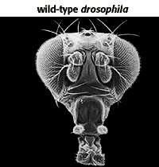
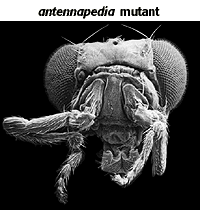

Developmental Mechanisms Problem Set
Problem 7 Tutorial: Role of homeotic genes in development
| Homeotic genes: |
Tutorial
A. Determine the direction of developmental fates of groups of cells in a segment of the embryo.
B. Include a DNA sequence called the homeobox that is similar in all homeotic genes.
C. Are altered in homeotic mutations such as Antennapedia, causing abnormal development of the head.
D. Are similar between mice and flies for both structure and order on the chromosome.
E. All are true.
|
 
Images courtesy of |
Pattern formation is essential to the development of all organisms. Once the basic pattern of a developing organism has been established, homeotic genes tell each segment what to develop into. Mutations in homeotic genes have given scientists insight into how these genes work. One such mutation is the antennapedia mutation in Drosophila. This drastic mutation causes legs to grow in the place where antennae are normally found. Scanning electron micrographs of a normal fly (wild-type) and an antennapedia fly are on the left. Homeotic genes appear to be similar among all animals. In fact, in the early 1980s, scientists in Switzerland and Indiana University used recombinant DNA technology to study the antennapedia gene in Drosophila. They discovered a common sequence of about 180 base pairs in several different homeotic genes. This shared sequence of DNA is called the homeobox. Later research has demonstrated that this sequence is present in almost all eukaryotes. The widespread presence of the homeobox implies that the homeobox may have evolved from a single gene in an ancient organism. The homeobox is believed to regulate the expression of other genes and to play a major role in controlling developmental processes. |


Contact the Development Team
http://biology.arizona.edu
All contents copyright © 1996. All rights reserved.